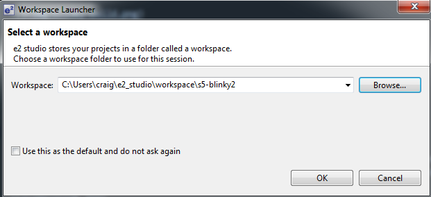
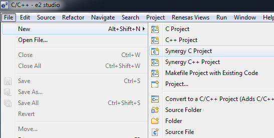
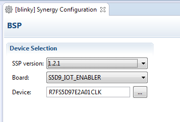
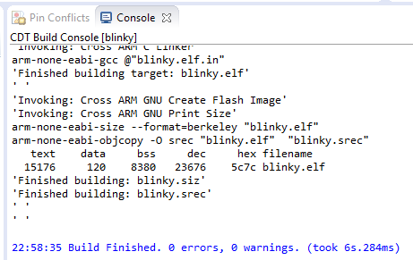
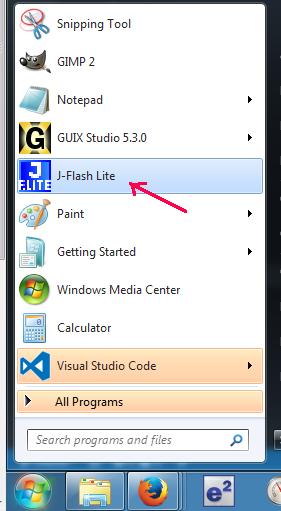
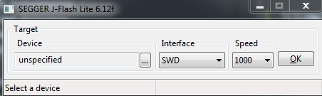
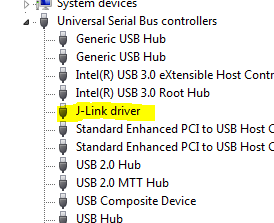
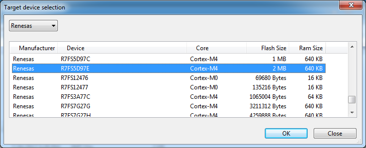

Creating a new Blinky image
Building a Custom Blinky
Blinky is the Hello World of embedded boards. This will replace your factory image with a new custom image that makes the onboard LEDs blink. Before you go any further, verify that you can restore the factory image of your board. Read the overview of creating a custom board image.
e2 Studio
Start e2 Studio.
Create a new workspace.

Go to the Workbench.

Go to the Project Explorer view.

File -> New - Synergy C Project

Specify a project name.

Configure your Synergy Project

Important: Your board must be S5D9_IOT_ENABLER. If this option does not come up, you will need to install the Board Support Package. See the previous section on Software Configuration
Select Blinky as the Project Template.

Enter the Synergy Configuration perspective and look for the BSP tab.

In the BSP tab, make sure you have the proper Board and Device.

Select Build.

The .srec file will be placed in the Debug folder.

If your board is connected to the J-Link debugger, can now press Debug and the binary will move over to your board.
You can also use a separate tool called, J-Flash Lite. To make the process easier to learn as a step by step process, I'm going to break the process into two steps, build and then flash. I'm going to show you how to use J-Flash Lite to to move the binary over. When you're actively building and debugging, you can use e2 Studio to manage the process automatically.
Using J-Flash Lite
Connect debugger board
- Connect debugger board to Windows workstation with USB cable
- Connect debugger board to Renesas S5D9 board with ribbon cable and JTAG connector
- Connect Renesas S5D9 board to USB power source (such as your computer's USB port)

Configure J-Flash Lite
Open J-Flash Lite. If you do not have J-Flash Lite installed, download the J-Link Software pack from SEGGER.

When J-Flash starts, you'll need to specific the Device and Interface. You may also need to update your driver.

Plug in the SEGGER debugger board into your Windows computer and it will automatically install the J-Link driver.

Update the driver (optional).

The specific Renesas MCU used in the S5D9 IoT Fast Prototyping Kit is:
R7FS5D97E2A01CLK
Select Renesas, R7FS5D97E.

Select JTAG for Interface.

Select the .srec binary to upload.

Flash the board. See the blink. The default blinky flashes all three LEDs.